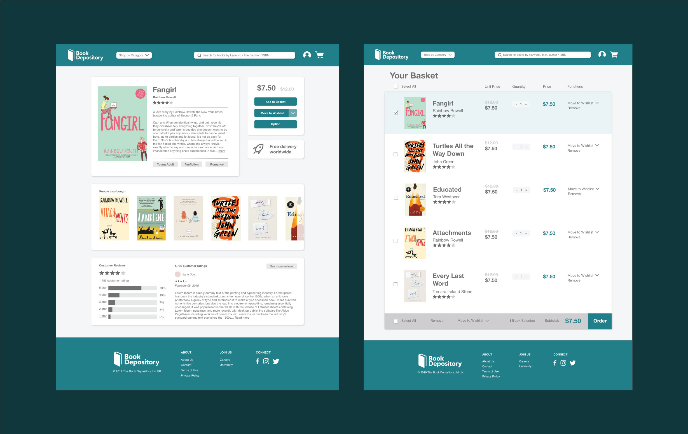
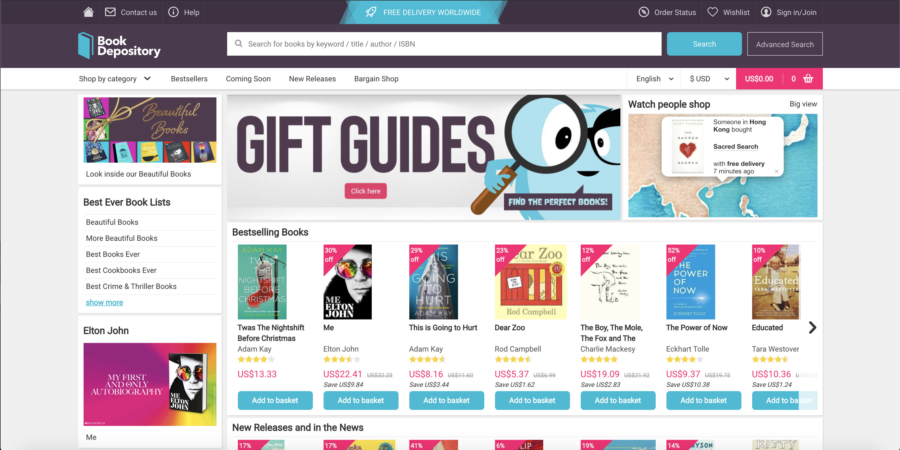
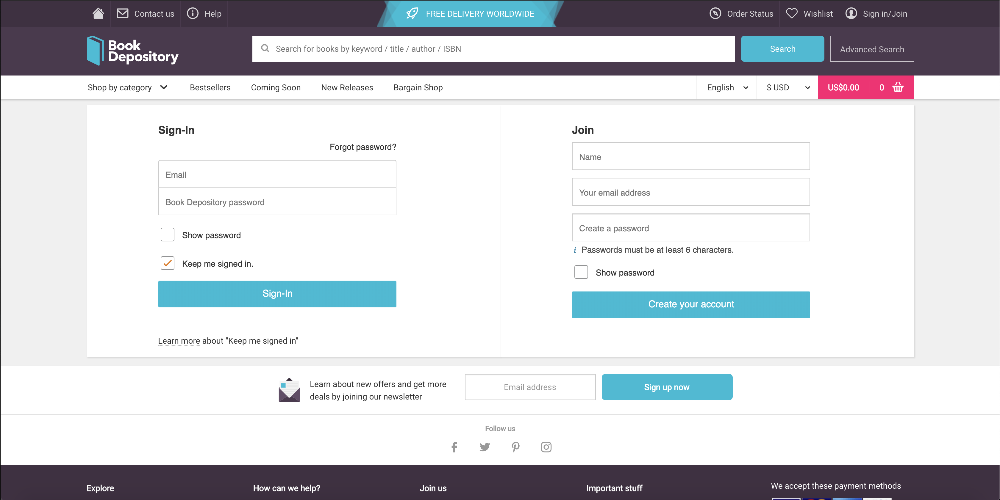
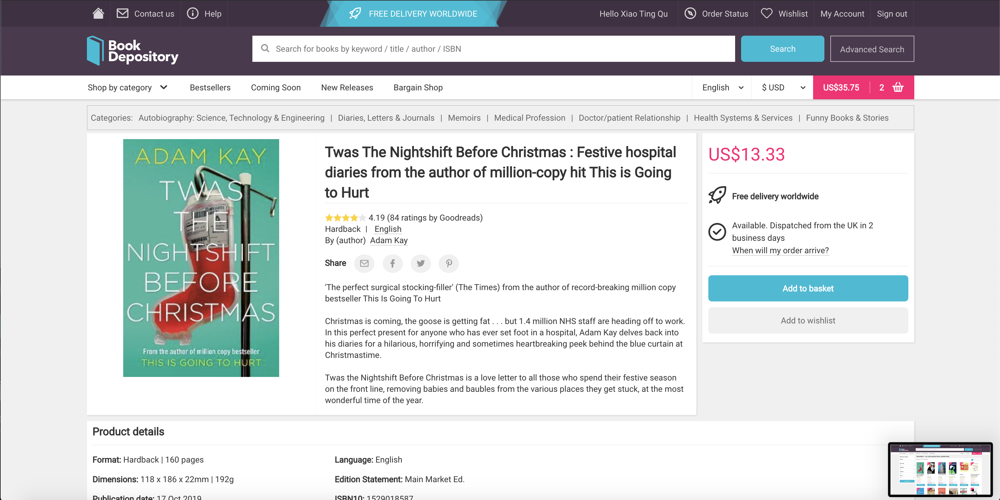
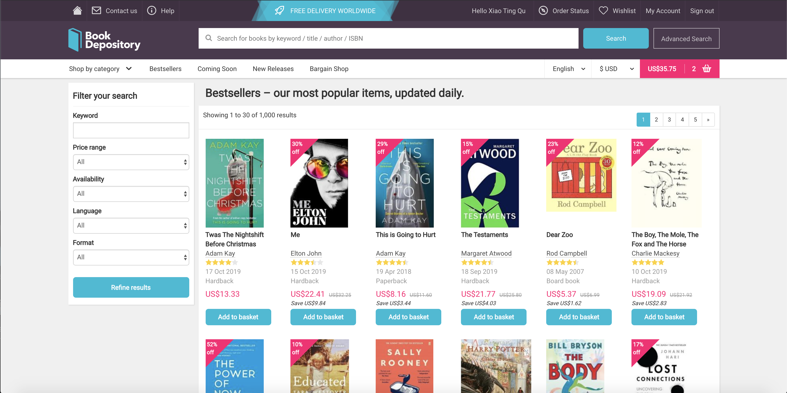
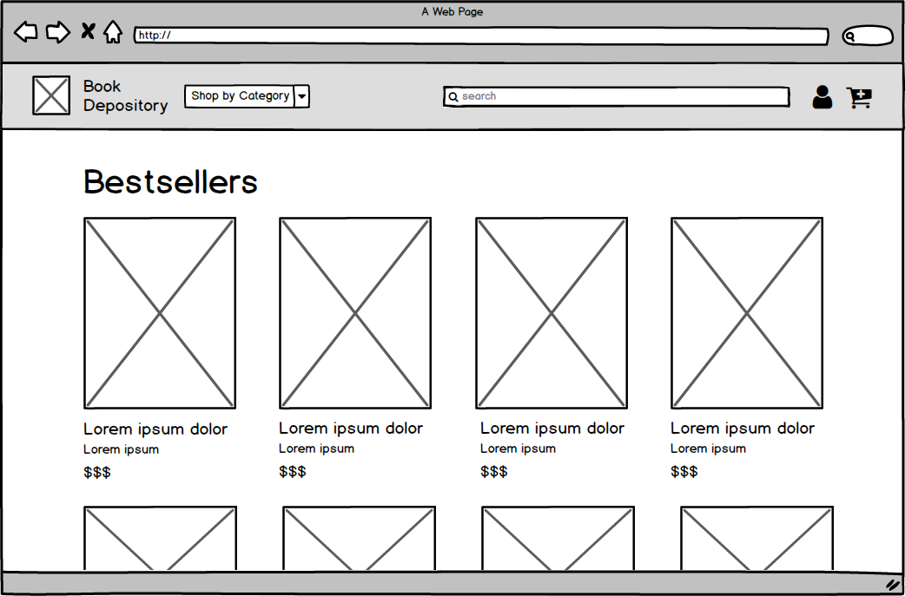
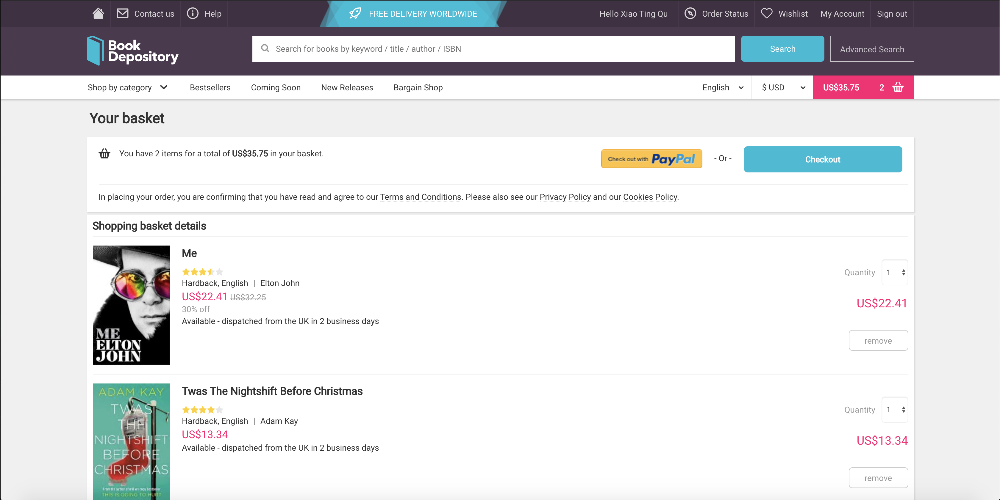
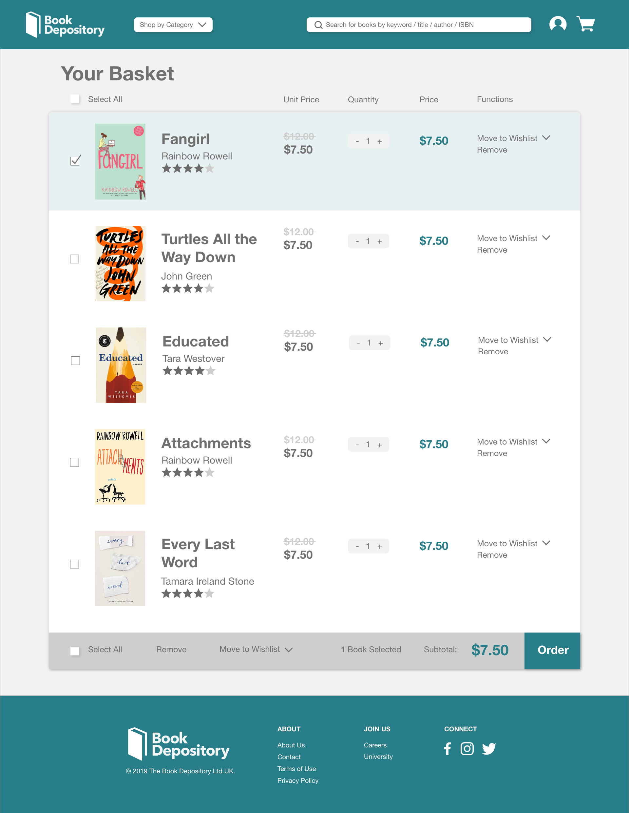

Book Depository Redesign

Context
Redesign was a project for CSCI 1300: User Interfaces and User
Experiences, a course at Brown University taught by
Jeff Huang. My
partner for this project was
Miranda Mo.
Our goal was to choose a site or app and redesign it using some of the
usability principles we had learned in class.
Wireframe
We chose to redesign Book Depository, a UK based book retailer that is
known for free delivery worldwide. Integrating UX principles of
learnability, usability, and memorability, we improved the user
experience of the website to aid the site’s intuitive navigation. We
first analyzed the original website, prototyped low/high fidelity of a
book information page, and then coded our responsive (4K widescreen
desktop, laptop, tablet, and mobile) designs with HTML/CSS.
Below are images of the original home page, sign in, book information,
bestsellers, and basket screen. We noticed the large amount of
content, especially on the home page and in the navigation bar, and
thought about how we could simplify the pages while keeping the main
functionalities.
We created five wireframes, one for each screen (home page, sign in,
book information, bestsellers, and shopping basket). The main changes
include simplifying the navigation bar, increasing the size of the
books, and reducing large amounts of white space that did not
contribute to breathability. These changes decluttered distracting
content and additional words to increase usability by helping users
focus on the page’s main functions.

Home Page


Sign In


Book Information


Bestsellers

Bestsellers Redesign

Cart

Next, we created a flow chart of the navigation flow between the five
different pages that we chose.

Explanation
| UI Principle | Original Interface | Redesigned Interface |
|---|---|---|
| Intuitive Design |
|
|
| Ease of Learning |
|
|
| Ease of Use |
|
|
| Memorability |
|
|
High-Fidelity Redesign
After creating our five wireframes, we made a high-fidelity mockup
of the basket and book information screen.

Responsive Redesign - Annotated Mockup
The next step in the project was to create a responsive website that
would maintain visual appeal across different screen sizes. First,
we adapted the designs to four screen sizes: standard desktop
(laptop), 4K, tablet, and mobile.

Then, we chose to code the book information page because content
shifts to different locations on the desktop, mobile, and tablet
screens. Below are annotated mockups of how elements on the screen
respond to different screen sizes.

Design Choices
In creating a redesign, we first considered the most important
features on the page and navigation from one page to another. Our
redesign is a much more minimalistic version of the original site,
but we made sure to include the important features on the page, such
as the navigation bar, book cover, description, reviews, ratings,
and footer. We simplified the navigation bar to only include the
important aspects: logo, search bar, basket, profile, and “shop by
category” drop down. Eliminating the additional components of the
navigation bar that are in the original site still keeps the
navigation flow intact while reducing the distractions from the
additional words.
The original website for Book Depository has three main colors: dark
purple, blue, and hot pink. In our redesign, we changed the color
palette to have one accent color to make the site more minimalistic
and to unify the content. We chose a dark turquoise for the
navigation bar, buttons, and footer. This accent color draws
attention to the important parts on the screen while not being too
bright and distracting. It also connotes intellectual curiosity and
professionalism, aiding the credibility of the website.
For font, we chose Helvetica Neue for readability and limited it to two
font sizes (with the exception of the crossed out book price which is a
third font) and used bolded words to highlight important phrases on the
page. The original website uses a grid and has blocks around sections on
the page to group important information together visually. We thought that
these blocks were a good way to help with grouping content in a way that
makes sense, so we included blocks in our redesign but increased the
padding between the words and the border of the box to improve
readability. We made the background of the web page a light gray color
(similar to what is done in the original website) and in addition added a
drop shadow to the boxes to further emphasize the distinction between
various sections on the page.
Conclusion
Our goal was to redesign an interface using the usability criteria and
design principles that we learned in class. We chose a site that has room
for improvement. Through this process, we were able to go from ideation to
creating low-fidelity and high-fidelity mockups to making a responsive
website using HTML and CSS.
Other Projects